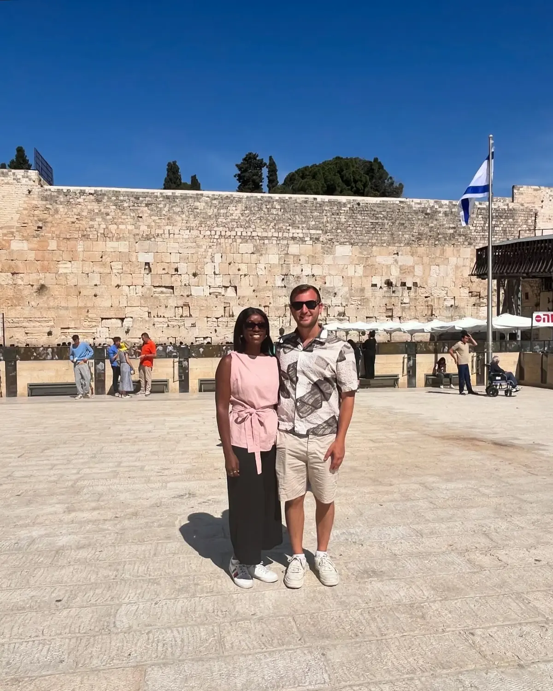

Jerusalem · Most significant01
The Western Wall
📍 The Western Wall (the Kotel) · Old City
The holiest place where Jewish people are permitted to pray, and one of the most powerful atmospheres we've ever stood in — people from all over the world leaving folded prayers in the cracks of the ancient stone. The plaza is open to everyone; the prayer sections are split for men and women, heads are covered at the wall, and it's a moment to be quiet and respectful. Deeply memorable.
Dress modestlyA moment to be still